The system serves two branches: MTK (Mentakab) and KTN (Kuantan). Each form knows its branch from the link / QR you open. Sistem ini untuk dua cawangan: MTK (Mentakab) dan KTN (Kuantan). Setiap borang tahu cawangannya daripada pautan / kod QR yang anda buka.
KTN drivers: open the link that ends with ?branch=KTN (or scan the KTN QR on the lorry). You will only see KTN lorries & drivers. Pemandu KTN: buka pautan yang berakhir dengan ?branch=KTN (atau imbas kod QR KTN pada lori). Anda hanya nampak lori & pemandu KTN.
MTK drivers: keep using your current link — it stays MTK automatically. No change needed. Pemandu MTK: guna pautan sedia ada — ia kekal MTK secara automatik. Tiada perubahan.
Office staff: the office pages have their own branch buttons — see B0. Staf pejabat: halaman pejabat ada butang cawangan sendiri — lihat B0.
A. DRIVER / PEMANDU
A1. Open your form / Buka borang anda
Scan the QR on your lorry, or open your saved link, on your phone. The page header shows your branch (e.g. Kuantan). Imbas kod QR pada lori anda, atau buka pautan tersimpan, di telefon. Tajuk halaman menunjukkan cawangan anda (cth. Kuantan).
Open the Fuel form (yellow bar). In Trip details · Maklumat perjalanan, pick the lorry first: your name usually fills in by itself. Check the name and the date (today). Buka borang Minyak (bar kuning). Dalam "Maklumat perjalanan", pilih lori dahulu: nama anda biasanya terisi sendiri. Semak nama dan tarikh (hari ini).
2nd driver · Pemandu kedua: only if two of you share the lorry; otherwise leave it empty. Hanya jika dua orang dalam lori; jika tidak, biarkan kosong.
Tap Take receipt photo · Ambil foto resit and photograph the whole receipt, flat and close. When the form can read it for sure, it fills in the RM and litres: check them against the receipt. If the boxes stay empty, type them yourself. Ketik "Ambil foto resit" dan ambil foto seluruh resit, rata dan dekat. Bila borang dapat baca dengan pasti, ia isi RM dan liter: semak dengan resit. Jika kotak kosong, taip sendiri.
Odometer (km): type the reading on the lorry now — every time. Taip bacaan odometer pada lori sekarang — setiap kali.
Tap Save · Simpan and wait for Saved · Disimpan. If you see Not confirmed yet · Belum disahkan, tap Check · Semak when you have signal — do not fill it in again. Ketik "Simpan" dan tunggu "Disimpan". Jika keluar "Belum disahkan", ketik "Semak" bila ada liputan — jangan isi semula.
The form remembers your lorry & name. Please submit on the same day you fuel. Borang ingat lori & nama anda. Sila hantar pada hari yang sama anda isi minyak.
A3. No refuel / Tak isi minyak
If you did NOT pump fuel today: check your lorry and name, tap the red No refuel · Tak isi minyak button, then Yes, send · Ya, hantar. No odometer, amount or photo needed. Jika anda TIDAK isi minyak hari ini: semak lori dan nama, ketik butang merah "Tak isi minyak", kemudian "Ya, hantar". Tiada odometer, RM atau foto diperlukan.
Open the POD form (blue bar). In Trip details · Maklumat perjalanan, pick the lorry first: your name usually fills in by itself. Check the name and the date (today). Today's deliveries for that lorry appear in a list. Buka borang POD (bar biru). Dalam "Maklumat perjalanan", pilih lori dahulu: nama anda biasanya terisi sendiri. Semak nama dan tarikh (hari ini). Senarai penghantaran hari ini untuk lori itu akan keluar.
At every shop: get the signature and stamp first, then tap the big blue camera button and photograph each invoice (1 invoice = 1 photo, the whole page in the frame). The form checks the invoice barcode for you. Di setiap kedai: dapatkan tandatangan dan cop dahulu, kemudian tekan butang kamera biru dan ambil foto setiap invois (1 invois = 1 foto, seluruh muka surat dalam bingkai). Borang semak kod bar invois untuk anda.
Fill in pallets if any, then tap Save · Simpan (it appears when every invoice has a photo). Wait until the shop shows Delivered · Dihantar. If you see Not confirmed · Belum disahkan, tap Check · Semak when you have signal — do not take the photos again. Isi pallet jika ada, kemudian tekan "Simpan" (keluar bila setiap invois ada foto). Tunggu sehingga kedai bertanda "Dihantar". Jika keluar "Belum disahkan", tekan "Semak" bila ada liputan — jangan ambil foto semula.
Cannot deliver? Tap Problem · Masalah on the shop card, take a Proof photo · Foto bukti, choose the reason and confirm. Tidak dapat hantar? Tekan "Masalah" pada kad kedai, ambil "Foto bukti", pilih sebab dan sahkan.
B. SUPERVISOR / PENYELIA
KTN = WayneMTK = Nich Section B was rewritten on 26 Nov 2026 to match the office pages as they are now. The office pages are in English only. Bahagian B ditulis semula pada 26 Nov 2026 supaya sama dengan halaman pejabat sekarang. Halaman pejabat dalam bahasa Inggeris sahaja; label pada skrin ditulis dalam bahasa Inggeris di bawah.
Today's numbers: deliveries, POD photos, lorries, fuel. You only look; nothing is changed from this page. Angka hari ini: penghantaran, gambar POD, lori, minyak. Lihat sahaja; tiada apa yang diubah dari halaman ini.
Fuel Edit / Delete, the Weekly and Monthly views, the crew and route tables. Ubah / padam rekod minyak, paparan Weekly dan Monthly, jadual krew dan laluan.
Check the POD photos, scan the barcodes into EFI, replace an unclear photo, save a lorry's PODs to the NAS. Semak gambar POD, imbas kod bar ke EFI, ganti gambar yang tidak jelas, simpan POD satu lori ke NAS.
Import the day's delivery form and put the crew on each lorry (see B6). Import borang penghantaran hari itu dan tetapkan krew setiap lori (lihat B6).
Sign in: each page asks you to sign in with your Staff ID and PIN, then press Unlock. No PIN? Ask the office. The sign-in is shared by the office pages on the same computer and browser. Log masuk: setiap halaman minta anda log masuk dengan Staff ID (ID Staf) dan PIN, kemudian tekan Unlock. Tiada PIN? Tanya pejabat. Log masuk ini dikongsi oleh halaman pejabat pada komputer dan pelayar yang sama.
Branch: the Fleet Dashboard has a branch button (MTK, KTN, All); POD Admin has Mentakab / Kuantan. A link that ends with ?branch=KTN opens these two pages on Kuantan. Staff Admin and Driver Admin show both branches in one list, with the branch next to each name. Cawangan: Fleet Dashboard ada butang cawangan (MTK, KTN, All); POD Admin ada Mentakab / Kuantan. Pautan yang berakhir dengan ?branch=KTN membuka dua halaman ini pada Kuantan. Staff Admin dan Driver Admin tunjuk dua-dua cawangan dalam satu senarai, dengan cawangan di sebelah setiap nama.
Old links: the old Leave page now opens Staff Admin on the Leave tab. The old "POD Scanify" page only shows This page is no longer used. The old trial POD form (v2) opens the current POD form. Pautan lama: halaman Cuti lama kini membuka Staff Admin pada tab Leave. Halaman "POD Scanify" lama hanya tunjuk This page is no longer used. Borang POD percubaan lama (v2) membuka borang POD sekarang.
B1. Fleet Dashboard (new) / Dashboard baru
Open the Fleet Dashboard. If you see Sign in to view this data, sign in with your Staff ID and PIN and press Unlock. Buka Fleet Dashboard. Jika keluar Sign in to view this data, log masuk dengan ID Staf dan PIN, kemudian tekan Unlock.
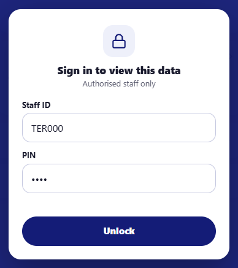
The sign-in box (sample Staff ID). / Kotak log masuk (ID Staf contoh).
After the sign-in you see six cards for today. Selepas log masuk anda nampak enam kad untuk hari ini.
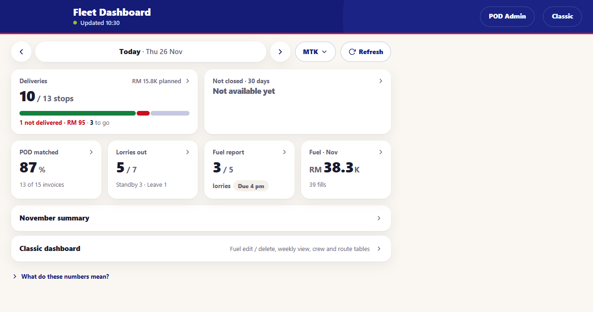
The main cards (sample data). / Kad utama (data contoh).
Card / Kad
What it shows / Apa yang ditunjuk
Deliveries
Stops with a POD record (delivered or not delivered) out of the stops planned for the day. Red = not delivered. Hentian yang ada rekod POD (dihantar atau tidak dihantar) daripada hentian yang dirancang hari itu. Merah = tidak dihantar.
Not closed
Shows Not available yet for now. Buat masa ini tunjuk Not available yet.
POD matched
Delivered invoices whose POD photo shows the barcode of that invoice. Invois dihantar yang gambar POD-nya tunjuk kod bar invois itu.
Lorries out
Lorries on a delivery list, out of the fleet. Standby = route done. Leave = drivers on leave today. Lori yang ada senarai penghantaran, daripada semua lori. Standby = laluan siap. Leave = pemandu bercuti hari ini.
Fuel report
Lorries out today that sent a fuel slip or "no fuel". Due by 4 pm. Lori keluar hari ini yang sudah hantar slip minyak atau "tak isi minyak". Perlu sebelum 4 petang.
Fuel + month
Fuel cost and number of fills this month. Kos minyak dan bilangan isian bulan ini.
Top row: the arrows go to the day before / after; press the date to pick a day; Today (shown when you look at another day) brings you back. The branch button changes the branch, and the choice is kept (Remembered on this device.). Refresh loads the numbers again; the page also updates by itself every 5 minutes. Baris atas: anak panah pergi ke hari sebelum / selepas; tekan tarikh untuk pilih hari; Today (keluar bila anda lihat hari lain) bawa anda balik. Butang cawangan tukar cawangan, dan pilihan itu disimpan (Remembered on this device.). Refresh muat semula angka; halaman juga kemas kini sendiri setiap 5 minit.
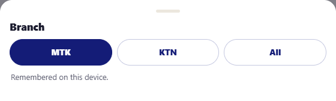
The branch chooser. / Pilihan cawangan.
Press a card to open its list, for example Deliveries: the shops not delivered, then every lorry. Press a lorry to see its stops. Press Back to return. Tekan satu kad untuk buka senarainya, cth. Deliveries: kedai yang tidak dihantar, kemudian setiap lori. Tekan satu lori untuk lihat hentiannya. Tekan Back untuk kembali.
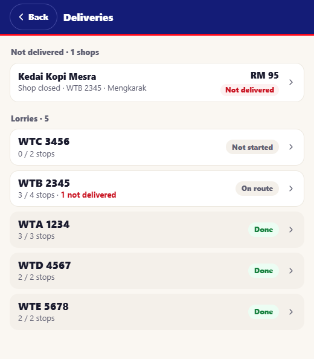
The list behind the Deliveries card. / Senarai di sebalik kad Deliveries.
The row named after the month (for example "November summary") shows routes, 2nd trips and leave per driver. What do these numbers mean? at the bottom explains every card. Baris dengan nama bulan (cth. "November summary") tunjuk laluan, trip kedua dan cuti setiap pemandu. What do these numbers mean? di bawah terangkan setiap kad.
"Not available yet" is not an error. Three figures are not ready on this page: the Not closed card, the last day out of the lorries under Not out, and the month totals in the month summary (only fuel cost is there). For open invoices of an earlier day, pick that day here, or open it in the classic dashboard (Needs action). "Not available yet" bukan ralat. Tiga angka belum siap di halaman ini: kad Not closed, hari terakhir lori keluar di bawah Not out, dan jumlah bulanan dalam ringkasan bulan (hanya kos minyak ada). Untuk invois hari lepas yang belum selesai, pilih hari itu di sini, atau buka hari itu di dashboard klasik (Needs action).
If a card says Could not load or Old data, press Retry on that card. If the sign-in box comes back with "Session expired", sign in again. Jika kad tulis Could not load atau Old data, tekan Retry pada kad itu. Jika kotak log masuk keluar semula dengan "Session expired", log masuk semula.
The previous dashboard is still there. Use it when you must correct or delete a fuel entry, or want the Weekly / Monthly view. Dashboard lama masih ada. Guna bila anda perlu betulkan atau padam rekod minyak, atau mahu paparan Weekly / Monthly.
To get there from the new dashboard: press Classic at the top right, or the row Classic dashboard under the cards. It opens on the same branch. Untuk ke sana dari dashboard baru: tekan Classic di atas kanan, atau baris Classic dashboard di bawah kad. Ia buka pada cawangan yang sama.The Classic link at the top right (red outline added for this guide). / Pautan Classic di atas kanan (garis merah ditambah untuk panduan ini).
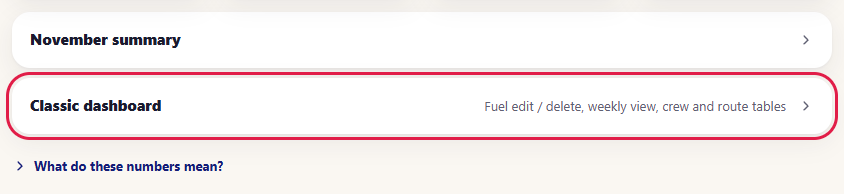
The Classic dashboard row under the cards. / Baris Classic dashboard di bawah kad.
To come back: the classic page has a bar on top, Classic dashboard: kept for fuel Edit / Delete. Press Open the new dashboard in it. Untuk balik: halaman klasik ada bar di atas, Classic dashboard: kept for fuel Edit / Delete. Tekan Open the new dashboard di situ.
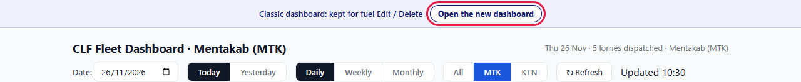
The top of the classic dashboard (red outline added for this guide). / Bahagian atas dashboard klasik (garis merah ditambah).
On the classic page choose the day (Today / Yesterday or the date box), the period (Daily / Weekly / Monthly) and the branch (All / MTK / KTN). Di halaman klasik pilih hari (Today / Yesterday atau kotak tarikh), tempoh (Daily / Weekly / Monthly) dan cawangan (All / MTK / KTN).
Edit a fuel entry: scroll down to Fuel submissions today and click the title to open it. Check the receipt photo (view) first. Then press the pencil at the end of the row. The page asks for the manager PIN (Manager PIN to edit fuel; ask the office), then the amount in RM, then the litres (leave empty to keep them). Wait for "Updated". Ubah rekod minyak: skrol ke Fuel submissions today dan klik tajuk itu untuk buka. Semak gambar resit (view) dahulu. Kemudian tekan pensel di hujung baris. Halaman minta PIN pengurus (Manager PIN to edit fuel; tanya pejabat), kemudian jumlah RM, kemudian liter (biar kosong untuk kekalkan). Tunggu "Updated / Dikemaskini".
Delete a fuel entry: press the bin at the end of the row, give the manager PIN, and confirm. Read the box first: it says Cannot be undone. Padam rekod minyak: tekan tong di hujung baris, beri PIN pengurus, dan sahkan. Baca kotak itu dahulu: ia tulis Cannot be undone (tidak boleh batal).
Shortcut from the new dashboard: open the Fuel report card, press one slip, then Edit or delete in Classic. Jalan pintas dari dashboard baru: buka kad Fuel report, tekan satu slip, kemudian Edit or delete in Classic.
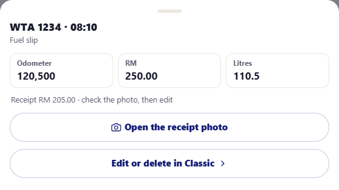
A fuel slip on the new dashboard, with the link to the classic page. / Slip minyak di dashboard baru, dengan pautan ke halaman klasik.
If the PIN is wrong the page says "Wrong PIN" and nothing is changed: press the pencil or the bin again and type the right PIN. Jika PIN salah, halaman tulis "Wrong PIN / PIN salah" dan tiada apa yang berubah: tekan pensel atau tong sekali lagi dan taip PIN yang betul.
B3. POD Admin: photos, Re-upload, Save to NAS / Gambar POD, muat naik semula, simpan ke NAS
The dashboards have no "POD plan" to set. The planned deliveries come from the delivery form imported on the Shipments page (B6). What the office does every day with PODs is on POD Admin. Dashboard tiada "pelan POD" untuk ditetapkan. Penghantaran yang dirancang datang daripada borang penghantaran yang diimport di halaman Shipments (B6). Kerja harian pejabat dengan POD ada di POD Admin.
Open POD Admin (the POD Admin link on the Fleet Dashboard also goes there). If it says POD Admin is locked, sign in with your Staff ID and PIN. Buka POD Admin (pautan POD Admin di Fleet Dashboard juga ke sana). Jika keluar POD Admin is locked, log masuk dengan ID Staf dan PIN.
Choose the Date and Mentakab or Kuantan. Each lorry is one row. The page refreshes by itself every 60 seconds. Pilih Date dan Mentakab atau Kuantan. Setiap lori satu baris. Halaman muat semula sendiri setiap 60 saat.
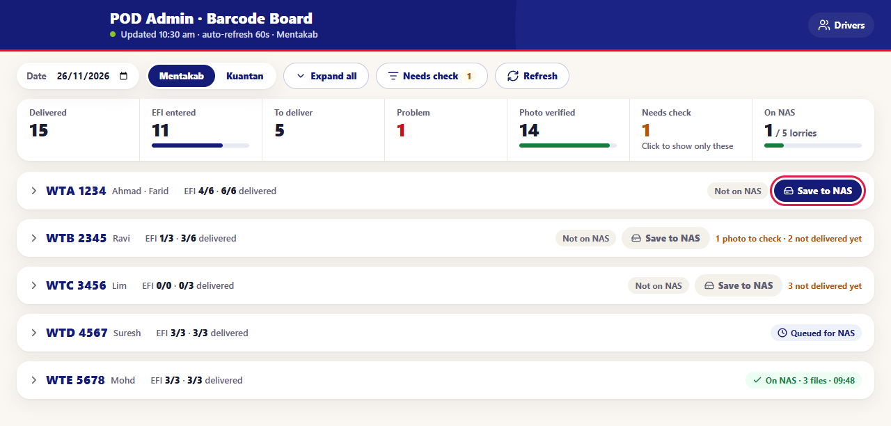
POD Admin with one row per lorry; the Save to NAS button that can be pressed is outlined in red (outline added for this guide; sample data). / POD Admin, satu baris setiap lori; butang Save to NAS yang boleh ditekan bergaris merah (garis ditambah; data contoh).
Press a lorry to open it, then press a shop to see its invoices. Press a small photo to see it big. Tekan satu lori untuk buka, kemudian tekan satu kedai untuk lihat invoisnya. Tekan gambar kecil untuk lihat besar.
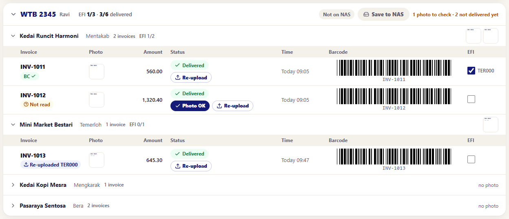
An opened lorry: the tag under the invoice number, the Photo OK and Re-upload buttons, the barcode and the EFI box. / Lori yang dibuka: tanda di bawah nombor invois, butang Photo OK dan Re-upload, kod bar dan kotak EFI.
Read the tag under each invoice number: BC with a tick = the barcode on the photo is this invoice. Not read, AI match, No photo, Wrong photo or Unclear photo = open the photo and look. The Needs check button shows only these invoices. Baca tanda di bawah setiap nombor invois: BC dengan tanda betul = kod bar pada gambar ialah invois ini. Not read, AI match, No photo, Wrong photo atau Unclear photo = buka gambar dan semak. Butang Needs check tunjuk invois ini sahaja.
You opened the photo and it is the right invoice: press Photo OK. (Undo takes the mark away.) Anda sudah buka gambar dan ia invois yang betul: tekan Photo OK. (Undo buang tanda itu.)
The photo is not clear: press Re-upload, choose the clearer photo (JPG or PNG, up to 5), and in the box Re-upload photo press Replace. Wait for "Photo replaced". The row then shows Re-uploaded with your Staff ID. The old photo is kept in Drive. Gambar tidak jelas: tekan Re-upload, pilih gambar yang lebih jelas (JPG atau PNG, hingga 5), dan dalam kotak Re-upload photo tekan Replace. Tunggu "Photo replaced". Baris itu kemudian tunjuk Re-uploaded dengan ID Staf anda. Gambar lama disimpan dalam Drive.
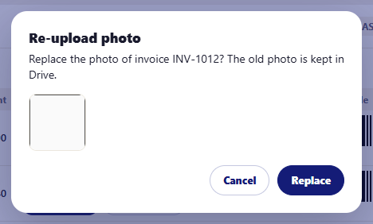
The page asks before it replaces the photo. / Halaman tanya dahulu sebelum ganti gambar.
After you enter an invoice into EFI (scan the barcode shown in the row), tick its EFI box. Your Staff ID appears next to the tick. Selepas anda masukkan invois ke EFI (imbas kod bar dalam baris itu), tandakan kotak EFI. ID Staf anda keluar di sebelah tanda.
Save to NAS, one button per lorry. When every invoice of the lorry is done and no photo needs a check, press Save to NAS on that lorry's row, then Save to NAS again in the box. Simpan ke NAS, satu butang setiap lori. Bila semua invois lori itu selesai dan tiada gambar perlu disemak, tekan Save to NAS pada baris lori itu, kemudian Save to NAS sekali lagi dalam kotak.
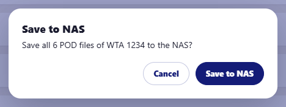
The page asks before it sends the lorry's files. / Halaman tanya dahulu sebelum hantar fail lori itu.
The row now shows Queued for NAS. When the copy is finished it shows On NAS with the number of files and the time. Baris itu kini tunjuk Queued for NAS. Bila salinan siap ia tunjuk On NAS dengan bilangan fail dan masa.
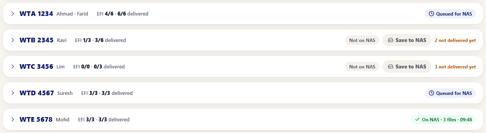
After the confirm: Queued for NAS; a finished lorry shows On NAS. / Selepas sahkan: Queued for NAS; lori yang siap tunjuk On NAS.
The button is grey? The reason is written next to it, for example "1 photo to check" or "2 not delivered yet". Finish that first (steps 5 and 6, or wait for the driver). NAS error — try again: press Try again; if it stays, tell the office. If a row shows Not on NAS with "photo changed", save that lorry again. Butang kelabu? Sebabnya ditulis di sebelah, cth. "1 photo to check" atau "2 not delivered yet". Selesaikan itu dahulu (langkah 5 dan 6, atau tunggu pemandu). NAS error — try again: tekan Try again; jika masih sama, beritahu pejabat. Jika baris tunjuk Not on NAS dengan "photo changed", simpan lori itu sekali lagi.
The "Scan copies" link and the POD Scanify page are no longer used. POD copies are saved with Save to NAS only. Pautan "Scan copies" dan halaman POD Scanify tidak digunakan lagi. Salinan POD disimpan dengan Save to NAS sahaja.
The Leave tab with its four cards (sample data). / Tab Leave dengan empat kad (data contoh).
Record a leave: in Mark leave choose the Driver and the Leave type. For one day keep Mode on Single day and set the Date. For several days in a row choose Date range and set Start date and End date. Press Mark leave, confirm, and wait for Leave marked. Rekod cuti: dalam Mark leave pilih Driver dan Leave type. Untuk satu hari biarkan Mode pada Single day dan tetapkan Date. Untuk beberapa hari berturut-turut pilih Date range dan tetapkan Start date dan End date. Tekan Mark leave, sahkan, dan tunggu Leave marked.
Delete a leave record: in Remove leave choose the Driver and the Leave date, press Remove leave and confirm. Wait for Removed. Padam rekod cuti: dalam Remove leave pilih Driver dan Leave date, tekan Remove leave dan sahkan. Tunggu Removed.
Holiday for everyone: in Company holiday set the Date and the Holiday name and press Toggle holiday. Press it once only: a second press on the same date turns the holiday off again. Cuti umum untuk semua: dalam Company holiday tetapkan Date dan Holiday name, kemudian tekan Toggle holiday. Tekan sekali sahaja: tekan kali kedua pada tarikh yang sama akan padamkan cuti itu semula.
A driver on leave is left out of the classic dashboard's list Fuel slips not in yet (it says "on-leave excluded"), and is listed under Drivers on leave on the new dashboard (card Lorries out). Pemandu yang bercuti tidak dimasukkan dalam senarai Fuel slips not in yet di dashboard klasik ("on-leave excluded"), dan disenaraikan di bawah Drivers on leave di dashboard baru (kad Lorries out).
B5. Drivers and salesmen / Pemandu dan jurujual
Open Driver Admin (the Drivers link on POD Admin also goes there). The Drivers tab of Staff Admin shows the same list and the same buttons. Buka Driver Admin (pautan Drivers di POD Admin juga ke sana). Tab Drivers dalam Staff Admin tunjuk senarai dan butang yang sama.
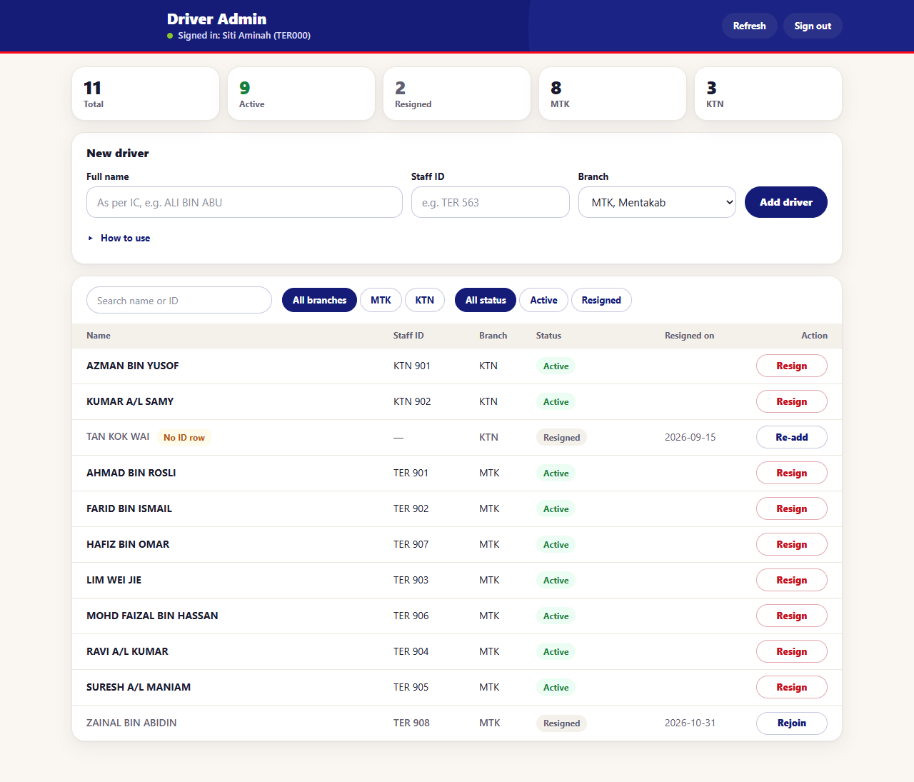
Driver Admin: counters, New driver, filters and the list (sample names). / Driver Admin: kiraan, New driver, penapis dan senarai (nama contoh).
Find a driver: type in Search name or ID, or press MTK / KTN and Active / Resigned. Cari pemandu: taip dalam Search name or ID, atau tekan MTK / KTN dan Active / Resigned.
New driver: under New driver type the Full name (as per IC) and the Staff ID, choose the Branch, press Add driver and confirm. No spreadsheet work is needed. Pemandu baru: di bawah New driver taip Full name (ikut IC) dan Staff ID, pilih Branch, tekan Add driver dan sahkan. Tidak perlu buka spreadsheet.
Driver left: press Resign on the row and confirm. The driver disappears from the forms, the dashboard and the KPI at once. History is kept. Pemandu berhenti: tekan Resign pada baris itu dan sahkan. Pemandu itu terus hilang daripada borang, dashboard dan KPI. Sejarah disimpan.
Driver came back: press Rejoin. If the row shows Re-add instead (a driver with No ID row), press it: the name is filled in above; type the Staff ID, choose the branch and press Add driver. Pemandu masuk semula: tekan Rejoin. Jika baris tunjuk Re-add (pemandu dengan No ID row), tekan: nama diisi di atas; taip Staff ID, pilih cawangan dan tekan Add driver.
Salesmen (Staff Admin, tab Salesmen): add with Add salesman, then press Reset PIN to give the first PIN. The new PIN is shown once only: write it down, give it to the salesman, then press I wrote it down, close. Deactivate stops a salesman signing in; Activate lets him sign in again. Jurujual (Staff Admin, tab Salesmen): tambah dengan Add salesman, kemudian tekan Reset PIN untuk beri PIN pertama. PIN baru ditunjuk sekali sahaja: tulis, beri kepada jurujual, kemudian tekan I wrote it down, close. Deactivate halang jurujual log masuk; Activate benarkan semula.
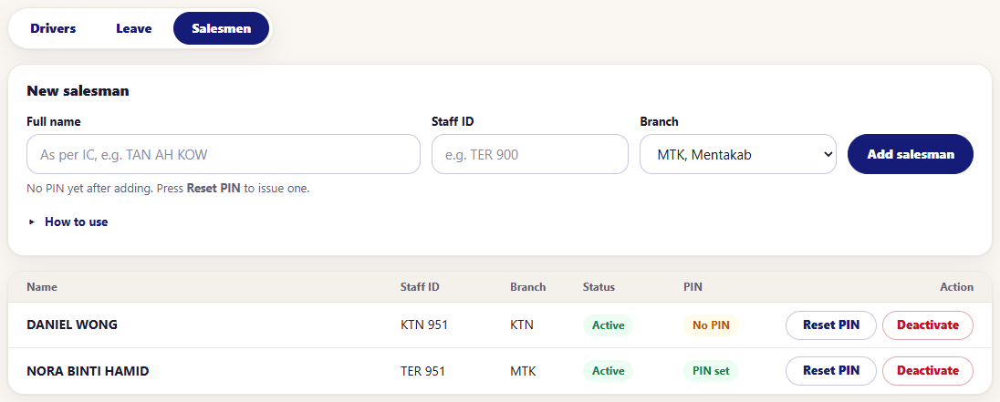
The Salesmen tab (sample names). / Tab Salesmen (nama contoh).
Who sees what in Staff Admin: role ADMIN sees all three tabs; role LEAVE sees the Leave tab only. Anyone else sees Staff Admin is restricted: ask the boss to set your role, then sign in again. Siapa nampak apa dalam Staff Admin: peranan ADMIN nampak tiga-tiga tab; peranan LEAVE nampak tab Leave sahaja. Orang lain nampak Staff Admin is restricted: minta bos tetapkan peranan anda, kemudian log masuk semula.
What a signed-in user without a role sees. / Apa yang dilihat pengguna tanpa peranan.
B6. Shipment / Assign Crew / Hantaran
On the Shipments page you import the day's delivery form and put the driver (and helper) on each lorry; that gives each driver's POD form its list for the day. Steps and pictures: Shipment manual. Di halaman Shipments anda import borang penghantaran hari itu dan tetapkan pemandu (dan pembantu) untuk setiap lori; itu memberi borang POD setiap pemandu senarai hari itu. Langkah dan gambar: Panduan Shipment.
B7. Daily Alert Email / Amaran Harian
Every working day in the afternoon, the system emails a list of drivers who have not submitted fuel, plus any POD shortfalls. KTN's alert goes to Wayne; MTK's to the existing recipient. Follow up with those drivers. Setiap hari bekerja pada sebelah petang, sistem menghantar e-mel senarai pemandu yang belum hantar minyak, serta kekurangan POD. Amaran KTN ke Wayne; MTK ke penerima sedia ada. Susuli pemandu tersebut.
CLF Trading Sdn. Bhd. · Transport Control Tower — User Manual (Driver & Supervisor) · English / Bahasa Melayu. Section B updated 26 Nov 2026.
Detailed per-form guides also available: Fuel, POD, Leave, Shipment. / Panduan terperinci setiap borang juga tersedia.